Overview
Welcome to PrepTrack
PrepTrack is an offline-first interview-prep tracker and organizer. It breaks a study roadmap into Phases → Weeks → Tasks, then wraps that structure with the tools you'd otherwise juggle across separate apps: a Pomodoro focus timer, an interview & company journal, notes, and a reports dashboard — all pulling from the same plan, so nothing needs to be re-entered twice.
It also ships with a starter set of practice questions, a timed mock-test mode, and a curated resource library to get you going. None of these aim to be an exhaustive question bank or course library — they're a foundation you're expected to extend with your own questions, notes, and resources as you go.
Every piece of data lives in a local database on your device. There's no PrepTrack server — the app works fully offline, and signing in is entirely optional. See Privacy for exactly what that means.
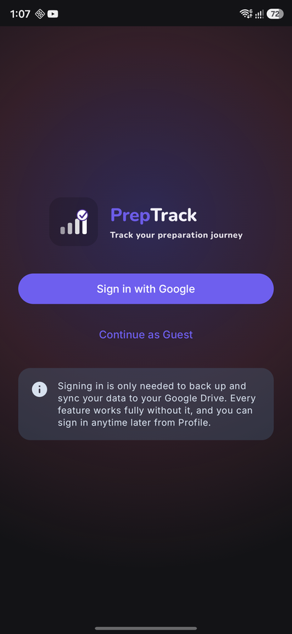
Login screen on first launch
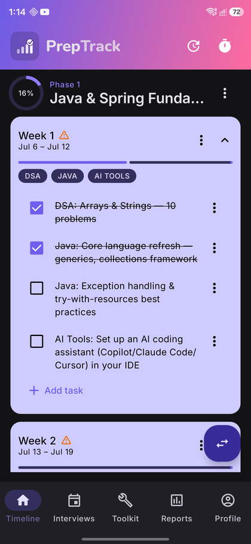
Timeline — the "home" view once a plan is active
Getting started
Guest mode or Google sign-in
On first launch you'll choose a language, then land on the Login screen. Every core feature — Timeline, Notes, Practice, Reports, Reminders, Interview Tracking — works fully as a guest, with nothing ever leaving your device. Signing in with Google adds a personalized profile and optional Google Drive backup/sync. You can sign in later from Profile at any time, so there's no wrong choice here.
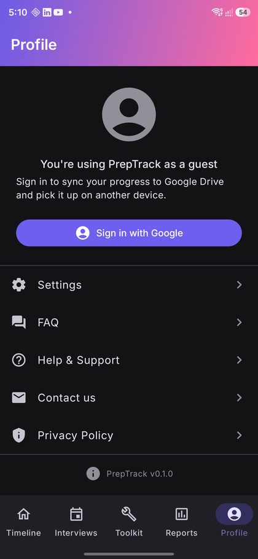
Profile screen — the sign-in prompt guests see
Choosing your first plan
Next you'll land on Choose a plan — a tile grid of 14 bundled templates: backend tracks (Java/Spring, Python, Node.js), frontend (React, Angular), fullstack combinations, DevOps/Cloud, Database, AI/ML, System Design, a fast one-month DSA cram plan, and a full-length 28-week senior fullstack roadmap (also offered at a standard 13-week length). Tap a tile to see its full description, week count, and tags, then tap Choose this plan to build it out — every phase, week, and task is created instantly. Nothing is installed until you actually pick something.
Prefer to build your own from scratch instead? Tap Create custom plan to name it, tag it, write a short description, and define your own phases — then add weeks and tasks yourself from the Timeline at whatever pace you like.
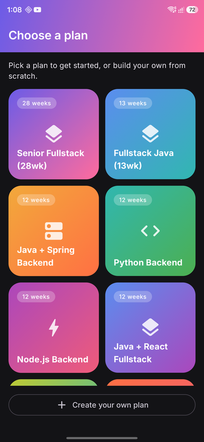
Choose a plan — tile grid, 2 per row
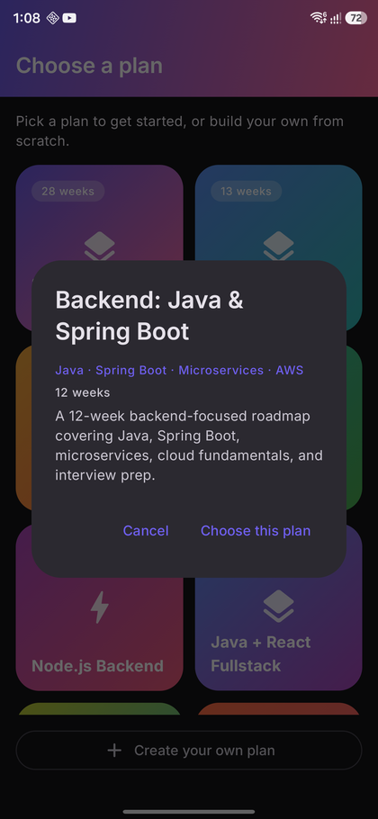
Plan detail dialog after tapping a tile
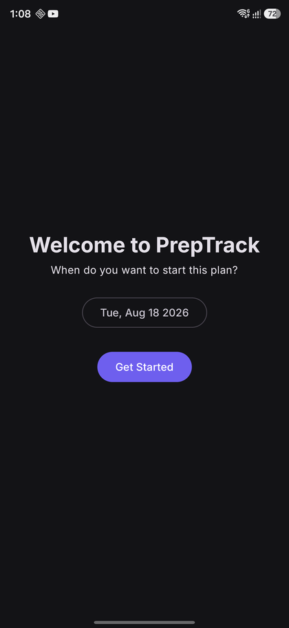
Start-date picker after choosing a plan
Your plan
Timeline & tasks
Timeline is where you'll spend most of your time. It's organized top to bottom as Phase → Week → Task: each phase is a colored section with its own progress ring, each week is an expandable card with its own checklist and mini progress bar.
Checking off work
Tap a task's checkbox to mark it done — its week's, phase's, and overall progress bars update instantly. Skipped is a separate status from "not done yet," for tasks you've deliberately decided to drop, so your stats can tell the two apart. Checking or unchecking a task never touches its notes or any focus session linked to it.
Adding, editing, and restructuring
- Any week's ⋮ menu lets you add a custom task (free text + category).
- Every task — seeded or your own — can be edited or permanently deleted (with a confirmation).
- A phase's ⋮ menu can rename it, recolor it, reorder it, add a week, or delete it — on a bundled plan exactly as freely as on a custom one.
Falling behind: Catch Up
When a week ends with pending tasks, Timeline's top bar surfaces a Catch Up action. Choose to redistribute the overdue tasks into upcoming weeks, push the whole remaining plan forward by a number of days, or leave them as backlog to clear manually — and if you change your mind, it's fully reversible right after via an undo snackbar.
Phase 1 expanded, a week with mixed done/pending tasks
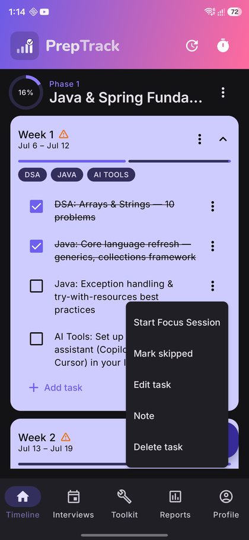
A task's "⋮" menu
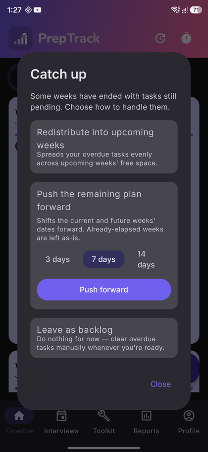
Catch Up dialog with its three options
Managing multiple plans
You can own up to 5 plans at once, from My Plans (Settings → Manage plans, or the shortcut button on Timeline). Exactly one plan is active at a time — Timeline, Reports, and Practice all follow whichever plan is currently active. The rest sit dormant until you switch to them, and switching never deletes anything: every other plan's progress, along with your Interview Tracker and notes, stays exactly as you left it.
- Activate a dormant plan to make it the one Timeline shows.
- Pause the active plan without losing any progress on it.
- Delete a plan you no longer want (permanent, with confirmation).
- Tap Browse plan templates from an empty or non-empty My Plans to add another bundled template alongside what you already own.
If your only active plan is ever paused or deleted, Timeline shows a "No active plan" message with a button straight back to My Plans — nothing crashes, nothing else is lost.
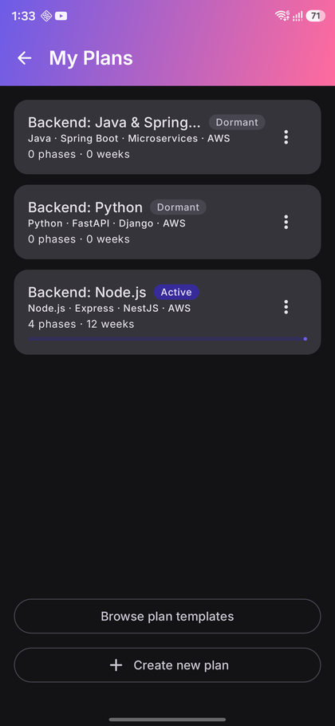
My Plans — 3 plans owned, one Active, two Dormant
Practice & Mock Tests
The Toolkit tab's Practice sub-tab is split into two modes. Practice mode is untimed, per-topic browsing with immediate feedback — nothing is saved once you navigate away, so it's meant for casual review. Mock Test mode is a timed test where you pick the topic scope, duration, and question count, ending in a score and a review screen — only Mock Test results are stored, and they feed directly into Reports.
The built-in question bank is a starting point, not full coverage of any topic — use the in-app Add Question flow to grow it with your own questions as you work through interviews and practice.
For open-ended topics like System Design with no single correct answer, you rate your own confidence (1–5) after seeing a model-answer outline; a rating of 4 or 5 counts as "correct" for scoring purposes.
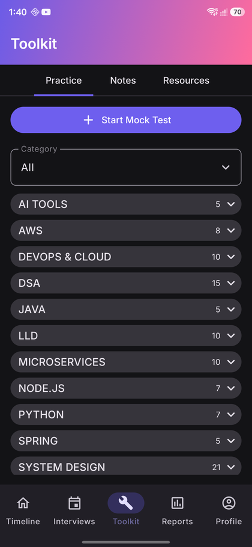
Practice Hub
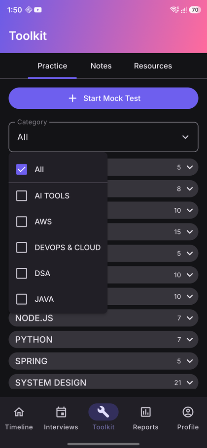
Category filter dropdown
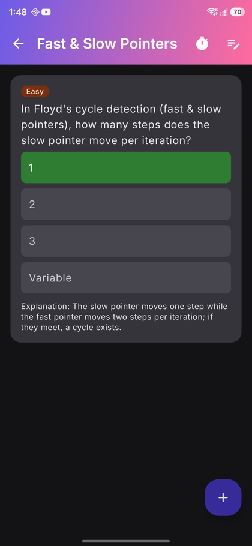
Topic Practice, answer revealed
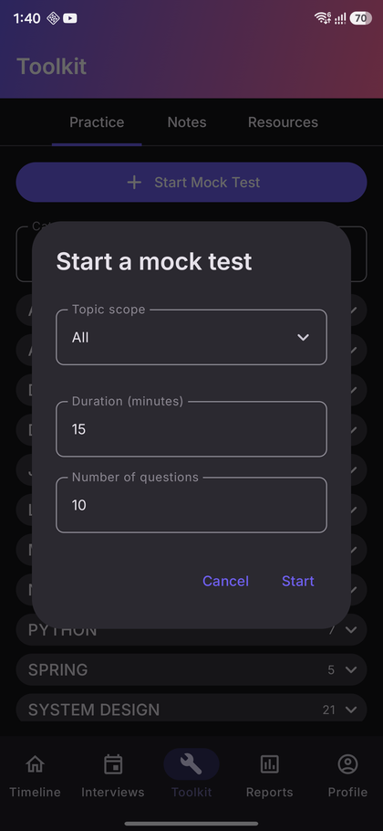
Mock Test setup
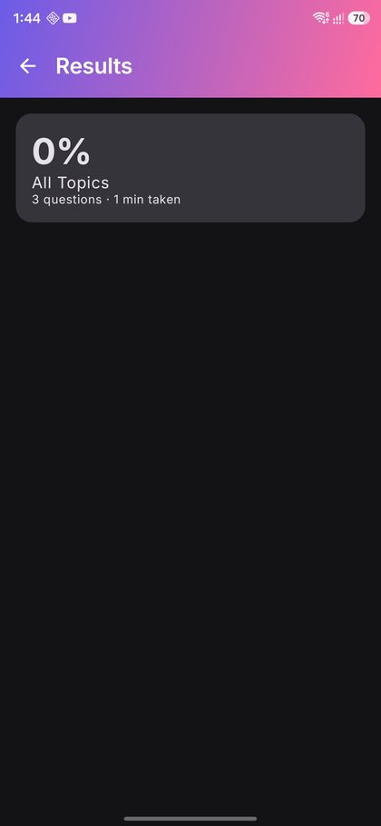
Mock Test review screen
Stay organized
Notes
You can attach a note at four levels:
- On any Task — its "⋮" menu on Timeline.
- On any Topic — the note icon on Topic Practice.
- On an Interview Round — its Reflection field.
- As a completely standalone note with its own title — the "+" button on the Notes tab, for anything not tied to a specific task, topic, or round.
A small formatting toolbar above the content field wraps your selected text in Bold,
Italic, Bullet list, Code block, or one of 5 preset text colors — or type the underlying
markdown-lite syntax directly (**bold**, *italic*) if you prefer.
The Notes tab's own search icon searches note content, interview reflections, and what each
note is attached to (e.g. "Task: Two Pointers Practice"). Deleting or resetting a task never
deletes its notes — you'd delete the note itself, explicitly, from the Notes tab.
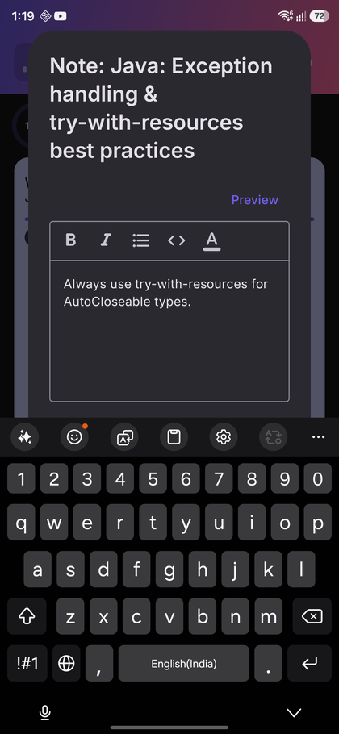
Note editor with formatting toolbar
Resource Bank
A curated starter set of resources — courses, videos, articles, books, and tools — across the topic areas in the bundled roadmap, browsable by category and searchable by title. Bookmark anything with the star icon, and mark it "used/completed" once you've gone through it.
Tap the "+" button to add your own resource — title, URL, type, and category — so the library grows into whatever you personally find useful. Any resource's "⋮" menu offers Delete, whether it's one you added or one that came pre-loaded (permanent, with confirmation — the only way to bring a deleted pre-loaded resource back is restoring from a prior backup). Book entries don't carry a web link on purpose; they show a muted "No link" label instead of opening anything.
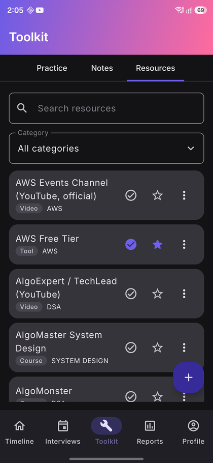
Resource Bank, one bookmarked item
Interview prep
Interview Tracker & Company Journal
Log a round with company, role, round type, scheduled date/time, format, interviewer name, and status. Completing a round prompts for outcome, a free-text reflection, and any questions you were asked. The Company Journal rolls up every round you've logged for a company, in chronological order — your whole history with that company in one place, useful to revisit before the next round.
Logging a scheduled round automatically offers "remind me 1 day before" / "1 hour before" toggles — see Reminders for how those fire.
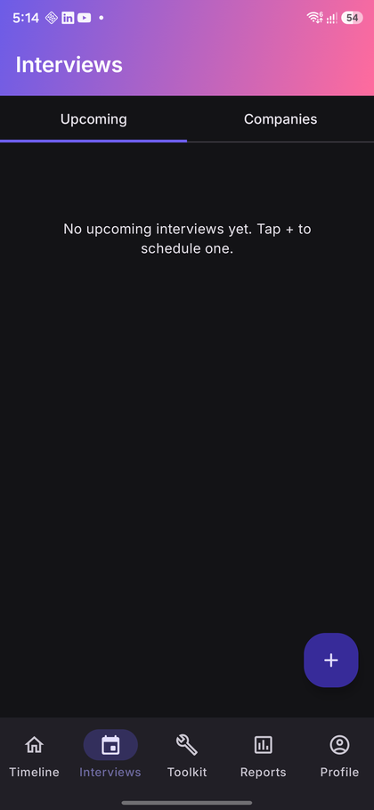
Interview Tracker, Upcoming tab
Focus Timer
A Pomodoro-style timer — 25 min work / 5 min short break / 15–20 min long break by default, all adjustable in Settings — that keeps running accurately even with the screen off or the app backgrounded. Link a session to a specific task or topic, or leave it standalone and tag it afterward. Stopping a session early doesn't lose the time: it's still logged, just flagged "Interrupted" rather than "Completed."
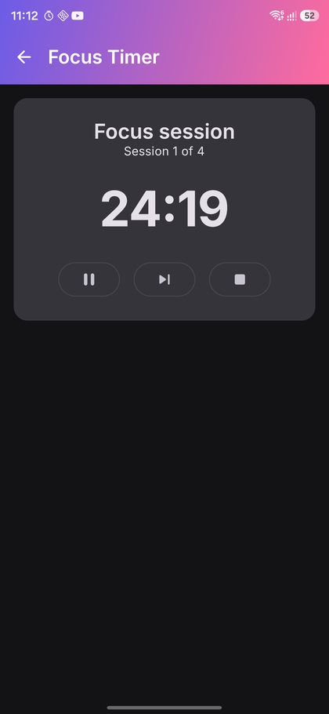
Active countdown
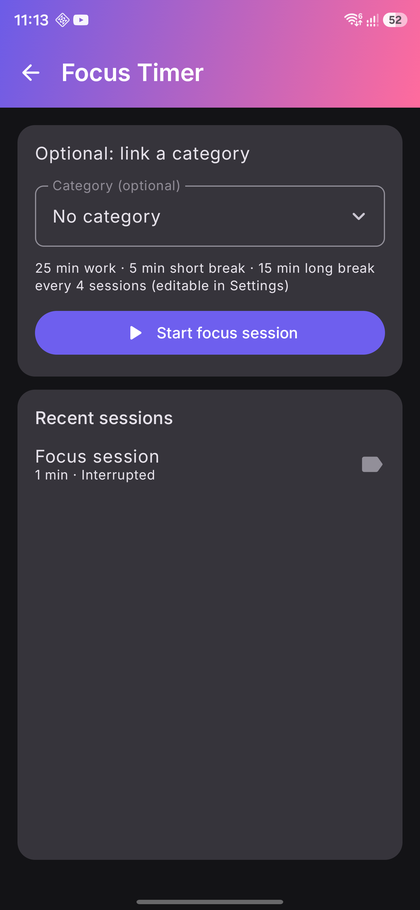
Session history
Track progress
Reports & analytics
Five tabs — Overview, Weekly, Monthly, Phases, and Interviews — cover streaks, focus time, DSA problems logged, interview funnel stats, and weak areas, plus weekly/monthly/phase-wise breakdowns of tasks completed vs. planned. Everything is computed on the fly from your existing data; there's no separate tracking system to keep in sync.
Tap Export to generate a PDF or .txt file on-device, saved anywhere via Android's native "Save As" picker — any folder, Drive, or SD card, with no detour through a share sheet.
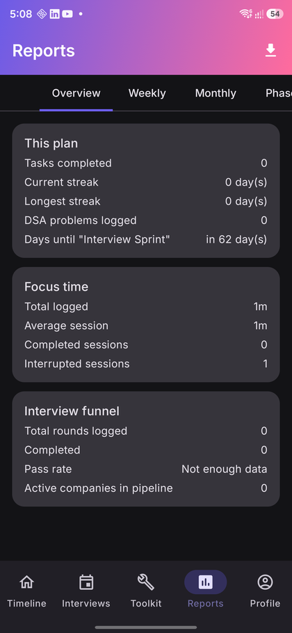
Reports, Overview tab
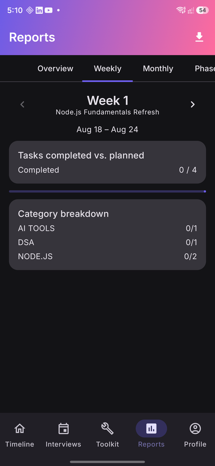
Reports, Weekly tab
Reminders & notifications
Set multiple reminder slots (time of day, days of week, optional category filter) from Settings — two are seeded by default (one weekday, one weekend). Reminders survive a device reboot, and degrade gracefully to inexact alarms if you don't grant the exact-alarm permission.
PrepTrack also sends streak-milestone notifications (3/7/14/30/50/100 days), phase-completion celebrations, and a "your weekly report is ready" nudge — all scheduled locally on your device, never pushed from a server.
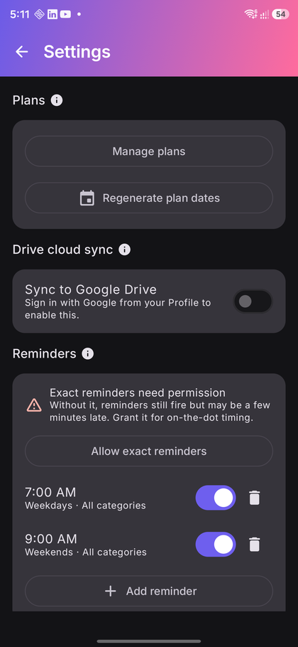
Reminder slots in Settings
Home screen widget
Add the PrepTrack widget from your device's widget picker to see, at a glance: today's date, how many tasks are due today (with up to 3 shown as checkboxes right on the widget), your current streak, and — if one's scheduled in the next 48 hours — a highlighted upcoming interview. Tapping any part of it opens the app to the relevant screen.
Account & data
Backup & sync
Nothing is backed up anywhere by default — everything lives locally until you choose otherwise. A manual export (a single JSON file, saved wherever you like) is always available offline, signed in or not.
Signing in adds an opt-in backup to your own Google Drive account, invisible in your normal Drive UI, so signing in on a new device and restoring brings back your full history. Choose how often it runs in Settings: after every change, every 15 minutes, hourly, daily, weekly, or manual-only — changeable anytime, with a "Sync now" action that always works regardless of tier. Signing out only stops future syncs; it never deletes anything already on your device.
Settings — Drive sync toggle
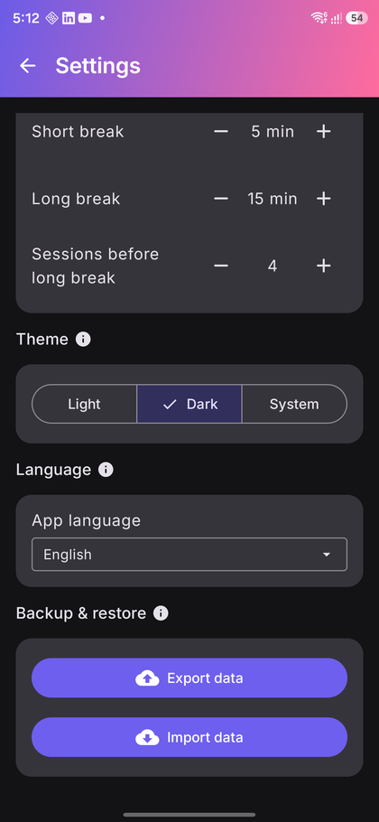
Backup & restore — Export/Import
Settings & profile
- Theme — Light, Dark, or System, with Material You dynamic color on devices that support it.
- Manage plans — opens My Plans (see above).
- Regenerate plan dates — recomputes every week's dates from a newly-chosen start date, with your task history, notes, and focus sessions completely unaffected.
- Language — English or हिन्दी, switchable anytime; changes apply instantly, no restart needed.
- Profile — edit your display name/photo locally, independent of your Google account's own values, with a reset-to-default option.
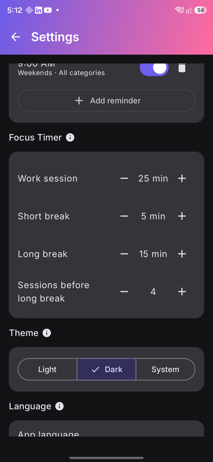
Theme setting
Profile screen
Privacy
PrepTrack has no analytics or telemetry SDK of any kind. Signing in reads only your Google
account's name, email, and photo to show your profile — that data stays on your device. If
you enable Drive backup, PrepTrack requests Drive's private appDataFolder
scope only, a hidden folder no other app (including Drive's own app) can browse.
Read the full policy at the Privacy Policy page, or in-app from Profile → Privacy Policy.